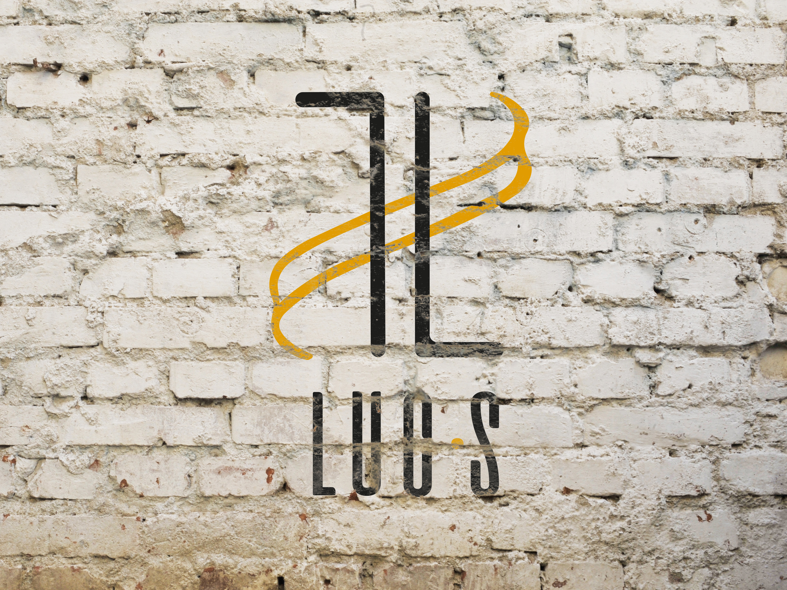

3 histoires d'indiens
Affiche pour le film 3 histoires d'indiens réalisé par Robert Morin. Faite avec un approche illustratif. #Photoshop #Illustrator
TP2
site web Par Alejandro Yanez Del rio
582-1W1 – Mise en page Web
Techniques d’intégration multimédia
Collège de Maisonneuve
Automne 2022
Un gars avec une personnalité explosive autant que sa creativité. Influencé par son entourage et par sa curiosité, il transforme les experiences et les émotions pour rendre des nouvelles créations.
Tout choix artistique et visuel est recherché pour donner une signification à ce qu'il fabrique et trouver un sens dans toutes les dimensions du possible.
Alejandro évoque le travail fort. L'échec n'est pas une possibilité et tout projet entrepris doit être executé parfaitement; dans un délai fiable et ce, grâce à sa versatilité dans le monde du graphisme et du multimédia et grand désir d'apprendre et de devenir meilleur.
Affiche pour le film 3 histoires d'indiens réalisé par Robert Morin. Faite avec un approche illustratif. #Photoshop #Illustrator
Projet d'édition corporative pour recréer le journal interne pour la compagnie Instagram. #InDesign #illustrator
Création de la marque Image pour la compagnie Luc.s. Des dérivés ont également été créés pour accompagner la marque image. #illustrator
Affiche et dérivés pour la Rancontre Internationale du Documentaire à Montréal. #Photoshop #illustrator #InDesign
Nous vivons dans un monde de ruptures. 3 affiches ont été conçues pour parler des ruptures social, économique et technologique. #illustrator #InDesign
Création de l'affiche des finissants en graphisme et des cartons d'invitation. #illustrator #sérigraphie
Panflet pour le prix Arts-Affaires de Montréal. La contrainte était de seulement utiliser un couleur et ses teints. #illustrator #InDesign
Logo pour la compagnie Millénium qui s'occupe de vendre des extensions et perruques non-syntéthiques. #illustrator
Montréal est une ville pour tout le monde. L'affiche et sa déclinaison invitent les gens à venir à Montréal. #Photoshop
Logo pour le photographe Arthur Dorville. #Photoshop

conçue pour le cours de concéption graphique et imagerie matricielle uniquement avec des effets faits avec le logiciel. #Photoshop

Dans le cadre du cours de conception graphique, il fallait créer un portrait en utilisant uniquement des pinceaux sur photoshop Voici le miens. #Photoshop
Ma toute première création vidéo. Court métrage qui dénnonce la dépression
Pour afficher les films que téléquébec affichera pour le mois d'octobre
La différence entre un graphiste salarié ou travailleur autonome? la-voici!!

| Heure: | Mardi | Mercredi | vendredi | samedi |
|---|---|---|---|---|
| 11h00 | Dispo! | Dispo! | ||
| 12h00 | ||||
| 13h00 | ||||
| 14h00 | Dispo! | |||
| 15h00 | Dispo! | |||
| 16h00 | ||||
| 17h00 | ||||
| 18h00 | Dispo! | |||
| 19h00 | ||||
| 20h00 | ||||
| 21h00 | ||||
| À noter: Les lundis, jeudis et dimanches je ne suis pas disponible! | ||||